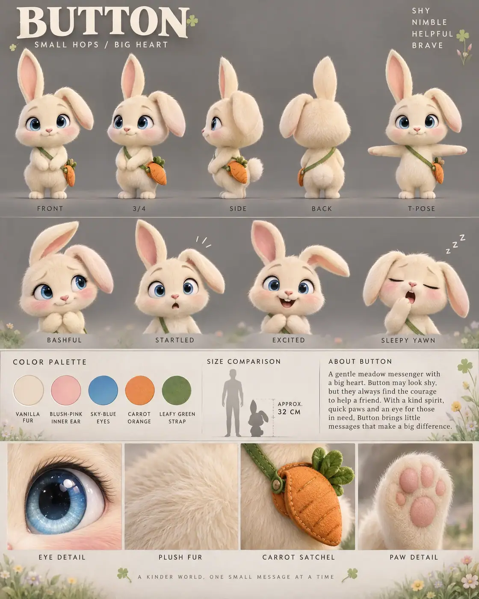

#97 of 100
Button
Bunny
Pets & FarmSMALL HOPSBIG HEART
- Species
- Bunny
- Collection
- Pets & Farm
- Height
- 32 CM
- Personality
- SHYNIMBLEHELPFULBRAVE
- Colour palette
- VANILLA FURBLUSH-PINK INNER EARSKY-BLUE EYESCARROT ORANGELEAFY GREEN STRAP
- Expressions
- bashful blushing smile
- startled wide-eyed expression
- excited open-mouth grin
- sleepy floppy-ear yawn
- Detail panels
- EYE DETAIL
- PLUSH FUR
- CARROT SATCHEL
- PAW DETAIL
- Character note
- Button — a gentle meadow messenger who looks shy but always finds the courage to help a friend
Reference sheet prompt
Cute cream-colored bunny named BUTTON, with oversized sky-blue eyes, one perfectly upright ear and one floppy ear, rosy cheeks, a tiny heart-shaped nose, soft vanilla fur, a fluffy cotton tail, and a miniature carrot-shaped satchel crossing the body. A shy but brave meadow messenger high-end 3D animated feature character reference sheet, original character design, polished cinematic family-animation aesthetic, portrait 4:5 presentation board, charming editorial character-design layout, top-left header reading “BUTTON” with the tagline “SMALL HOPS / BIG HEART,” four personality traits in the top-right corner reading “SHY / NIMBLE / HELPFUL / BRAVE” full-body turnaround in the top section — exactly five evenly spaced views: front / 3-4 / side / back / T-pose, one ear upright and one ear floppy in every view, satchel strap and carrot-shaped bag clearly consistent, clean pose labels beneath each view row of 4 bust-length facial expressions: bashful blushing smile, startled wide-eyed expression, excited open-mouth grin, sleepy floppy-ear yawn, expressive ear positions matching each emotion color palette swatches with clean uppercase labels: VANILLA FUR, BLUSH-PINK INNER EAR, SKY-BLUE EYES, CARROT ORANGE, LEAFY GREEN STRAP neutral warm-grey studio background with subtle spring meadow accents: faint clover leaves, tiny pastel wildflowers, soft grass shapes, and gentle morning haze limited to the bio panel and lower detail strip, clean grey negative space around the pose rows, thin section dividers, soft cinematic 3-point lighting middle information band containing the color swatches, a small bunny silhouette beside a human height comparison, approximate height label “APPROX. 32 CM,” and a short readable character bio describing Button as a gentle meadow messenger who looks shy but always finds the courage to help a friend bottom row of exactly 4 macro detail panels labeled EYE DETAIL, PLUSH FUR, CARROT SATCHEL, PAW DETAIL, showing the glossy blue eye, soft layered fur, stitched carrot-shaped satchel, and tiny pink paw pads 8k render, consistent chibi proportions, large rounded head, oversized expressive ears, short springy legs, fluffy cotton tail, clean editorial typography, no extra characters, no duplicate ears, no distorted satchel, no busy meadow scene, no logos